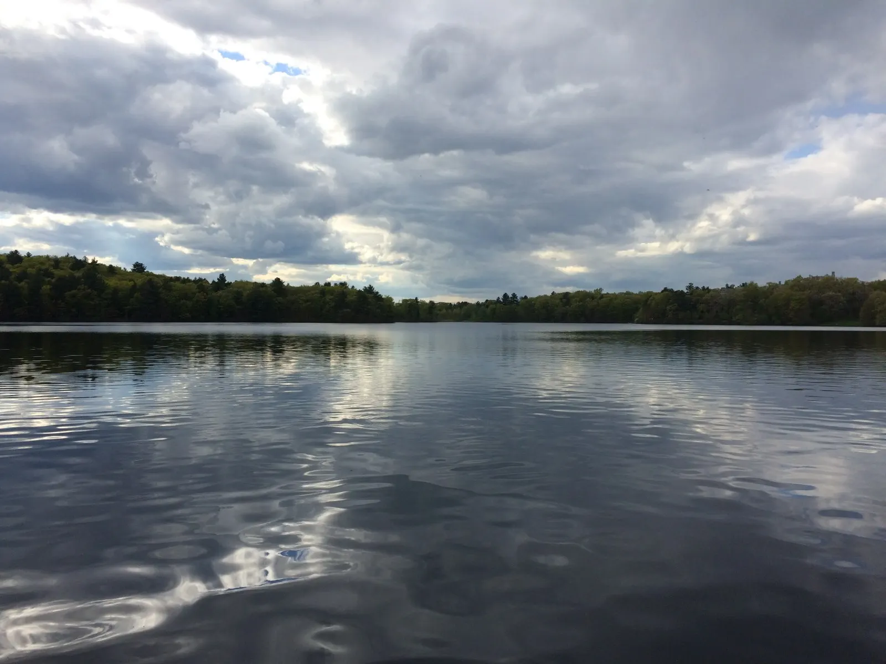

Graduation felt surreal. I think it still hasn’t hit me yet that I am now a Wellesley alumna. I went through the motions, finally saw my family as we were in procession down to the Sev Green tent for Commencement, sat through a 3-hour long ceremony, took pics with friends I was able to see amidst the aftermath chaos, packed, and was off with my family, leaving Wellesley for good.
I laughed over how I had worried about what to do during senior week, which ended up being more stressful than finals week. After a fun two-day getaway road trip with some friends to White Mountain National Forest in New Hampshire, I had to put packing on the back burner as I rushed to finish my MIT D-lab project and Economic Journalism article assignment while writing a one-page paper in prep for my India summer internship and searching for apartments for when I return to Boston in the fall. I did have some fun though: Tuesday was Senior Gala, and Thursday was full of events, from the Athletics Banquet and Econ department reception to the Baccalaureate Celebration and Concert in the evening, where I performed a Chopin Etude in the Chapel, my last performance at Wellesley (I did not like that piano, and I was really nervous for some reason, but still glad I did it. More on my piano and tennis experiences in a separate post.) I also enjoyed the clean air and beautiful running trails around Lake Waban for the last few times, thinking about the 100º weather and air pollution I would soon find myself in in India.

How to summarize the last 4 years in one blog post?? If I were to do it all over again, what would I have done differently? I will try to answer these questions!
I really liked my last semester of classes — they were opportunities to apply what I’ve learned the last four years, and they were more about creating products and completing projects than memorizing textbooks and taking exams. My four years at Wellesley were challenging, but there are definitely things I would have liked to do if I had more time. A lot of people say they admire student athletes, that it must be so hard to balance both academics and tennis. But in reality, we’re just giving something else up in order to play on the tennis team, whether it’s a research position, involvement in an organization, or volunteer experience. It’s really not that different.
Has Wellesley changed me? Yes and no. I’m still the same person. I still don’t know what I want to do with my life. I don’t feel smarter than I was four years ago—I haven’t taken a math or chem class since first semester and have forgotten a lot of U.S. history. I maybe know a little more about economics. I’m not sure if my presentation skills improved, though presenting seems less daunting now.
What I did do was explore more topics and see more of the world. I took courses ranging from world politics and history of Western music to a Spanish class on Cervantes and moral philosophy. I fell in love with NYC, travelled to the Cayman Islands, and spent a semester in Europe. I wish I took an art history course (as reading all the captions in a museum does not replace an art history class). I might’ve also minored in biology or music, getting that additional music theory or genetics class in. I would’ve loved to learn jazz piano or vocals, and try rowing. At the same time, my piano and tennis experiences were absolutely rewarding. My piano recital was the highlight of my senior year, seeing my work over 4 years come to fruition was rewarding in itself. And while my athletic performance this season was disappointing, I learned so much from being a captain, and winning an athletics department award was not a bad way to cap my four years here.
Wellesley allowed me to be myself. It allowed me to gain self-confidence and gave me opportunities to grow as a team player and a leader. It encouraged me to participate and speak up in class, to sit in the front row and not be afraid to ask questions. It gave me the opportunity to be a leader in ways that I might not have had at another college (my teammates laugh every time they hear that I, an Econ major, was president of the Chemistry Society). It challenged me to do what I never thought I would be able to do (i.e., lead a tennis team and perform a solo piano recital for 45 minutes). Most importantly, it gave me friendships that will hopefully last for many years.
If I were to give advice to incoming college students, I would say explore every opportunity and try as many new things as possible, though not to the point that you’re just checking boxes off of a checklist (which I may have done). I worked at the Spanish Department for two years, which was a great work study job but not great for career exploration. For someone like me who didn’t know what I wanted to do, I would recommend opportunities to explore different careers: I spent a semester interning at a renewable energy company and my senior year interning at a law firm. I tried a lot of new things: I studied abroad (and went caving/spelunking for the first time), worked in my chemistry professor’s lab, explored new places and restaurants in Boston, took “fun” classes, lived in the Spanish house, and took an MIT class (well, sort of—over half the class was Wellesley students).
I move into the real world with uncertainty, like a misty gray cloud. At some point while I was at Wellesley, I took note of a paragraph from page 77 in Sylvia Plath’s The Bell Jar:
I saw my life branching out before me like the green fig tree in the story. From the tip of the branch, like a fat purple fig, a wonderful future beckoned and winked. One fig was a husband and a happy home and children, and another fig was a famous poet and another fig was a brilliant professor, and another fig was Ee Gee, the amazing editor, and another fig was Europe and Africa and South America, and another fig was Constantin and Socrates and Attila and a pack of other lovers with queer names and offbeat professions, and another fig was an Olympic lady crew champion, and beyond and above these figs were many more figs I couldn’t quite make out. I saw myself sitting in the crotch of this fig tree, starving to death, just because I couldn’t make up my mind which of the figs I would choose. I wanted each and every one of them, but choosing one meant losing all the rest, and, as I sat there, unable to decide, the figs began to wrinkle and go black, and, one by one, they plopped to the ground at my feet.
This is how I felt—and still feel sometimes—about my future. I think about whether I chose the right first job and where it will lead me, considering that one of my tentative plans is to go to law school and pursue environmental law and policy, a niche field. I wonder whether I made the right choice to choose a more rewarding but lower-prestige, lower-paying job in a city 6 hours’ flight away from my parents’ home.
But I also go into the “adult life” filled with optimism. People say your college years are your peak years; I hope that doesn’t hold true for me! I hope my working years get a lot more fun, whether hanging out in Boston or doing random excursions with colleagues and friends. I have yet to discover the power of the Wellesley network and to let my self-confidence blossom as I believe that I can achieve whatever I set my heart to. I look forward to exploring more of Boston, making new friends, joining new groups, and finding new hobbies to pursue. But first, an adventure in India awaits!
So, here are 8 takeaways from four years at Wellesley:
- Leadership comes in both visible and subtle forms. I was designated a captain of the tennis team, but I was also a leader prior to that and in other ways not related to the title, whether by encouraging my first-year doubles partner or simply listening to the concerns of a teammate.
- Things don’t just happen. I soon realized as captain that I had taken certain things for granted, like a smooth team dynamic. Team cohesiveness doesn’t just come automatically; things are that way for a reason, because someone put in the time and effort to create an atmosphere where people felt welcome and part of the team.
- Keep an open mind. I changed my major 3 times while at Wellesley, experienced all sorts of new classes and adventures, and did things I never thought I would do. Take advantage of the opportunities that come your way! Try new things!
- Don’t undersell yourself. Imagine life as a world full of possibility! I found that people at Wellesley tended to sell themselves short, undercutting their achievements, perhaps in a sorry attempt to humble themselves. Which is fine sometimes, but not when I want to celebrate your achievements and learn about the interesting work you have done! Also, don’t limit yourself by thinking there’s no way you can do it. You’ll be surprised at what you are capable of. And don’t be afraid to push yourself out of your comfort zone; you’ll be glad you did!
- Your grades don’t really matter. But your friendships will. I’ve been told this many times while at Wellesley, how 10 years later, you won’t remember that exam you bombed or that essay you pulled an all-nighter to finish, but you will remember the good and memorable times you had with your friends. And while no one cares about your transcript (except maybe grad schools), your friends will stay with you way beyond college.
- Don’t assume you’re the only one who doesn’t get it. Most of the time when I didn’t want to ask a question it was because I didn’t want to look stupid or assumed that everyone else understood it. I would then waste time later that night struggling over the concept or asking other people, who turned out to be just as clueless as I was. It’s better to ask in class and get it straightened out, rather than wait until later and realize no one else got it either.
- Never underestimate the power of the Wellesley network. We throw around the world “networking” so much that it now carries a social stigma with it. But you never know what might come out of it. I am now sharing an apartment with a Wellesley alum who a Spanish professor connected me with, and I had assisted this professor while working in the Spanish Department.
- Even if you fail, it’s not the end of the world. “How are you not stressed?” I’ve been asked several times. My answer is that I’ve realized that it’s not that big of a deal if I don’t do as well on that paper or exam as I wanted to, or if I lose that match or if I make several mistakes on that piece. In a few years (or less), none of this will matter, or even be remembered. My four years as a student-athlete are not ruined by that one Babson match. No one’s going to remember how I messed up big-time on that Chopin piece. All I’ll remember is how much satisfaction I got striking the ball in the sweet spot, and how much I enjoyed playing these pieces. What matters is how I felt playing my best game or sharing the mood of the piece with the audience, and how I’ll continue to foster and share that feeling for the rest of my life. And in the end, I’ll perform better if I’m not nervous and self-conscious and thinking to myself, don’t mess up! Because I’ve experienced too many times what happens when we think that.